2. Using the Editor
This chapter will introduce the basic concepts needed to create a
graphical circuit in TkGate.
2.1 Understanding the TKGate Interface
The main components of the TKGate edit window consists of a menu bar
and tool bar at the top, the module, net and port lists on the left, a
status bar on the bottom, and the main editing area in the center.
The main edit window contains major mode tabs to switch between "Edit"
mode for editing your circuit, "Interface" mode for editing the
interface of any modules you define, and "Simulate" mode for
simulating your circuit. Scroll bars can be used to scroll the
circuit, the list of modules or the list of nets.
2.1.1 Main Menu
The TkGate menu bar appears at the top edge of the main window and is
arranged by category. The menus that are available can change when
you enter different modes (e.g., editing versus simulation).
2.1.2 Pop-up Menus
Many of the features described in this manual can also be accessed
using the context sensitive pop-up menus. The pop-up menus are obtained
by pressing the right mouse button, and the menu items that appear
depend on what was selected. The menu that appears, depends on where
you clicked and what the current mode is.
2.1.3 Toolbar
Frequently used commands can be accessed through the TkGate toolbar.
These include commands for opening, saving and printing circuit files,
changing the editing tool, opening and closing modules and controlling
the simulator. The toolbars that are displayed change dynamically with
mode. You can also configure which toolbars you want to use on the Toolbars tab of the Options
dialog box. A complete list of the toolbar buttons are given in the
List of Toolbar Buttons.
2.1.4 Keyboard Shortcuts
Many of the commands that can be accessed through the menu or toolbar
can also be accessed through keyboard shortcuts. Commands for
creating gates are typical single character letters. When possible,
the letter is the first character of that gate type (e.g., "a" to
create an "AND" gate and "r" to create a "register"). By default,
file handling commands use Emacs-style shortcuts (e.g., "ctrl-c
ctrl-s" to save, "ctrl-x ctrl-f" to load a file, etc.) If you prefer,
you can choose to use Windows style shortcuts through the Interface tab on the options
dialog box.
2.1.5 Module List and Module Hierarchy
The modules defined in the current circuit can be shown as in an
alphabetical list view (press  to select), or in a hierarchy view (press
to select), or in a hierarchy view (press  to select). The list view simply displays all
of the modules in alphabetical order. The hierarchy view displays the
module hierarchy starting at the top-level module. Under each module
is the list of modules used by that module. There may also be
additional hierarchies with the loaded library parts and any unused
modules. Modules and the module hierarchy are described in greater
detail in Section 3.3 Module
Hierarchy.
to select). The list view simply displays all
of the modules in alphabetical order. The hierarchy view displays the
module hierarchy starting at the top-level module. Under each module
is the list of modules used by that module. There may also be
additional hierarchies with the loaded library parts and any unused
modules. Modules and the module hierarchy are described in greater
detail in Section 3.3 Module
Hierarchy.
2.1.6 Net and Port Lists
Below the module list in the lower-left corner of the main window is
the list of nets or ports in the current module. A symbol precedes
each net name depending on the type and whether the net is 1-bit or
multi-bit as shown in the table below:
1-Bit
Symbol | Multi-Bit
Symbol | Description |
|---|
 | | Wire with a hidden name. |
 |  | Wire with a visible name. |
 | | Register variable (HDL modules only). |
 | | Wire with a probe attached to it (in simulation mode). |
| | Module input port. |
 | | Module output port. |
|  | Module bidirectional port. |
The "Ports" list can be used to list the modules nets that are defined
as part of the interface for the current module. These are nets that
the user is expected to define in the module definition.
2.1.7 Status Bar
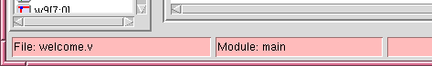
Figure 2.2: Status Bar
The status bar on the bottom indicates the file that is being edited,
and the current module from that file that is displayed in the circuit
window. A "*" after the file name indicates that the buffer has been
modified since the last time the file was saved. Below the file and
module name is a message bar for informational messages from TKGate.
These messages include confirmation for files that are loaded or saved,
or information on the currently selected gate or wire.
2.1.8 Major Mode Tabs
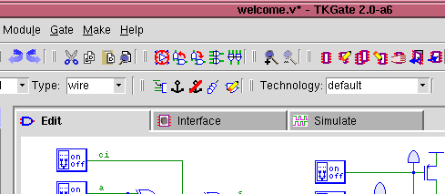
Figure 2.3: Major Mode Tabs
The main edit window has three tabs to indicate and select the major
mode in TkGate. "Edit" mode is used for creating and editing your
circuit. The majority of your time using TkGate is likely to be in
this mode. The "Interface" tab is used to design the interface for
any modules that you define. You can also use this mode to view the
interface of a module without creating a module of that type. The
"Simulate" tab is used to perform simulations. When you press this
tab, TkGate will send your circuit to the simulator, check for errors,
and if your circuit is error free, start the simulator. By default,
the simulator will be "paused" and you will need to press the button.
The icon in the upper right corner of the interface can also help show
you what mode you are in. The possible icons are:
| Symbol | Description |
|---|
| 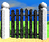 |
Edit/Interface Mode - The TkGate logo is shown when TkGate is in the "Edit" or "Interface" modes. |
| 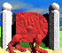 |
Paused Simulation - A stopped AND dragon shows that
TkGate is simulation mode, and the simulation is paused.
|
| 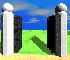 |
Running Simulation - A running AND dragon shows that
TkGate is in simulation mode, and the simulation is running.
|
2.1.9 Balloon Help
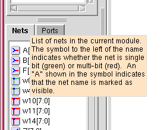
Figure 2.4: Balloon Help
Balloon help is available for many of the elements in the interface,
typically on the prompt text. To use balloon help, simply move the
mouse cursor over an interface element. After about one second, an
informational help message will be displayed as long as the mouse
cursor has not moved. For example, moving the mouse cursor over the
"Nets" label on the main window produces a balloon help message as
shown below:
Balloon help is also available in most of the dialog boxes.
Position the cursor over the text in a dialog box to view a more
detailed description.
2.2 Loading and Saving Circuits
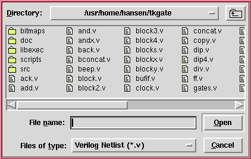
Figure 2.5: Open File Dialog Box
Opening and saving circuits as well as circuit printing operations are
done through the "File" menu option on the main window. To load
a file into TKGate, you can either specify the file name on the
command line when you start, select "Open..." from the "File" menu or
use the  button on the toolbar. You can
also use the keyboard shortcut Ctl-X Ctl-F. When opening a new file,
all existing modules will be flushed from the buffer, and the modules
in the new file will be loaded. TkGate save files have the extension
".v" and are in a special annotated Verilog format. Files saved from
TkGate contain special comments with information such as circuit
elements and wire positions. Also, gates with no explicit counter
part in Verilog such as switches and clock generators are saved as
annotation comments in the save file.
button on the toolbar. You can
also use the keyboard shortcut Ctl-X Ctl-F. When opening a new file,
all existing modules will be flushed from the buffer, and the modules
in the new file will be loaded. TkGate save files have the extension
".v" and are in a special annotated Verilog format. Files saved from
TkGate contain special comments with information such as circuit
elements and wire positions. Also, gates with no explicit counter
part in Verilog such as switches and clock generators are saved as
annotation comments in the save file.
You can also load non-TkGate generated Verilog files. These files
will load as a set of HDL modules. When saving from a file that was
loaded as a non-TkGate Verilog file, the saved file will contain
TkGate annotations.
When you open or save a circuit, you will see a dialog box such as
the one shown in the figure on the right. Enter a file name at the
prompt and press the "Open" (or "Save") button, or double click on a
file name. Only the appropriate type of files will be
displayed. You can change directories by double clicking on a
folder to open it, or by using the button in the upper right corner to
move up to the parent folder.
2.3 Loading Libraries
Libraries are loaded and unloaded through the "Library
Manager". Select "Library Manager" from the "File" menu or select  from the toolbar. This will open the library
manager as shown below:
To load a library, select it and press the "Load" button. To unload a
library, select it and press the "Unload" button. When you have
finished selecting which libraries you wish to have loaded, close the
dialog box by pressing "OK". If you press "Cancel", all of your
changes to the set of loaded libraries will be ignored.
from the toolbar. This will open the library
manager as shown below:
To load a library, select it and press the "Load" button. To unload a
library, select it and press the "Unload" button. When you have
finished selecting which libraries you wish to have loaded, close the
dialog box by pressing "OK". If you press "Cancel", all of your
changes to the set of loaded libraries will be ignored.
The set of libraries that are displayed in the library are found by
searching the TkGate library path. The library path can be set
through the library options dialog and can
include user-defined libraries.
When you save your design after loading libraries, TkGate will store
the names of libraries you have loaded in the save file. Then when
you load your design again, TkGate will automatically load the
necessary libraries.
2.4 Basic Editing Tools
The basic editing tools are selected through the "Mode" toolbar. While
a mode is active, the mouse cursor will change to reflect the active
mode. The available editing tools are shown in the table below.
| Button |
Cursor |
Shortcut |
Description |
|
 |
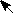 |
F1 |
The Move/Connect tool is indicated by the arrow cursor.
Use this tool for most editing operations including creating gates,
connecting wires, moving gates and wires, opening module instances,
opening property boxes of gates and wires, and deleting circuit
elements (with the "delete" key). |
|
|
|
(F1) |
The Connect tool is indicated by the soldering iron cursor.
To use this tool, first select the move/connect tool and then press and
hold the left mouse button on a wire endpoint. The cursor will then
change to the connect tool as long as you are holding down the mouse button. |
|
 |
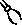 |
F2 |
The Wire Cutter tool is indicated by the wire cutter cursor.
Use this tool to cut wires by clicking on the wire at the point you want
to cut it. If you cut a wire with an unconnected end, the wire
segments between the cut point and the unconnected end will be deleted
automatically. |
|
| 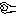 |
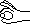 |
F3 |
The Inverter tool is indicated by the inverter bubble grabber
cursors. Use this tool to add or remove inverter bubbles on the inputs
and outputs of gates. Click the cursor near an input or
output to converter a non-inverting port to an inverting port or vice-versa. |
|
 |
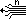 |
F4 |
The Wire Size/Type tool is indicated by the ribbon cable
cursor. Use this mode to change the bit width of a wire or the type
of wire. The desired bit width and wire type should be selected in
the selector boxes next to the button on
the Mode toolbar. Any wires that are clicked on will have their size
and type changed to the selected size/type. The wire type affects how
the wire's value will be set when multiple gates drive a wire. You
can also change wire bit widths and types using the Wire Properties dialog box. |
|
2.4.1 Creating Gates
There are three main ways to create gates in TkGate: using the menu
bar, using pop-up menus, and using keyboard shortcuts. Once you have
mastered the keyboard shortcuts, that is generally the preferred way to
create gates. These three methods are described in the following
sections.
Creating a Gate Using the Menu Bar
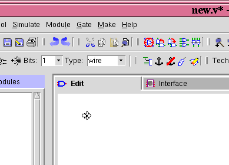
1) Left click to select the point.
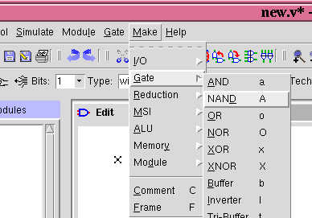
2) Select gate type from menu bar.
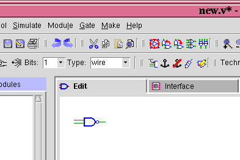
3) Gate is created at location set by point.
Figure 2.7: Creating a Gate
1) To create a gate such as a NAND gate, first select the Move/Connect
tool , and then press the left mouse button at the position you wish to
create it. While you are holding the mouse button down, the cursor
will change to an outline arrow to indicate the current orientation.
In the case shown at the left, the current orientation is 0 degrees indicating
the standard orientation.
When you release the button the arrow will disappear and the mark
symbol will remain. The mark indicates the center point for the new
circuit element. Clicking the left mouse button at another location
will move the mark, and selecting a gate or wire will clear the
mark.
2) Select the gate type by opening the "Make" menu. The circuit
elements are organized into seven basic categories:
- "I/O" types include switches, dip switches, power sources, clocks, etc.
- "Gate" types include the basic logic gates such as AND and OR gates.
- "Reduction" types include reduction versions of the basic gates types which combine multi-bit signals into a single bit
- "MSI/LSI" types include MUXES, DEMUXES, etc.
- "ALU" types include adders, multiplier, shifters, etc.
- "Memory" types include registers, RAMs, ROMs, etc.
- "Module" types include module blocks and ports.
There are also two additional non-circuit element objects that can be
created. A "Comment" is an arbitrary block of text that can be used
to add documentation to your circuit, and a "Frame" is a labeled box
that you can place around a portion of your circuit.
3) After selecting the menu option or typing the shortcut, the
circuit element will be created and displayed in bold to indicate that
it is selected. While the gate is still selected, you can press the
toolbar button or press the Tab key to
rotate the gate to the desired orientation.
Creating a Gate Using the Pop-up Menu
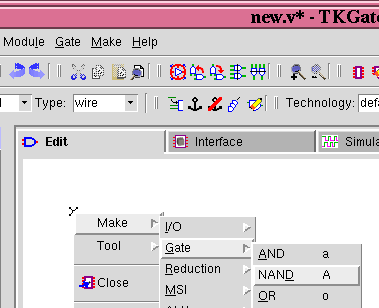
Right click to use pop-up menus to create a gate.
Figure 2.8: Creating a Gate with Pop-up Menu
To create a gate using the pop-up menu, right click on the position at
which you wish to create a gate. This will both create the position
mark and bring up the pop-up menu. Then select "Make", and then
maneuver through the gate category to select the appropriate gate
type.
Creating a Gate Using Keyboard Shortcuts
To create a gate using keyboard shortcuts, first set a mark in the
same way as when creating a gate using the menu bar (Section 2.5.1).
Then simply type the shortcut for the gate you wish to create. Most
of the gate types have single character commands to create them. For
example, you can type "a" to create an AND gate, and "A" to create a
NAND gate. A list of the gate types and their keyboard shortcuts are
shown in Section 2.16.
2.4.2 Connecting Wires
Port-to-Port Connections
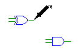
Step 1: select endpoint |

Step 2: drag wire end |
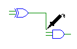
Step 3: bring wire end
close to other terminal |
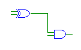
Step 4: release and connect |
Figure 2.9: Port-to-Port Connections
Port-to-port connections are used to connect the end points of two
wires. Before making the connections, make sure you have selected the
"Move/Connect" tool from the "Tool" menu. Then, click and hold the
left mouse button on the endpoint of one of the ends you wish to
connect. The mouse cursor will change to a soldering iron to indicate
that connect mode is active as shown in Step 1.
Next, drag the mouse toward the other endpoint you wish to connect to
as shown in Step 2, TKGate will automatically introduce any
necessary bends and maintain connections with only horizontal and
vertical segments. Bring the end close the the wire you wish to
connect to as shown in Step 3. When you release the mouse button,
the wires will connect as shown in Step 4.
Port-to-Joint Connections
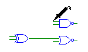
Step 1: select endpoint |
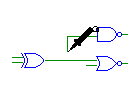
Step 2: drag wire end |
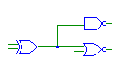
Step 3: bring wire end
close to other wire
and release |
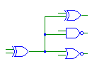
Step 4: continue making
connections as necessary |
Figure 2.10: Port-to-Joint Connections
Port-to-joint connections are used to connect a wire end point to the
center or corner of another wire, or to an existing wire joint.
These connections are made essentially the same way as port-to-port
connections. First, as in with port-to-port connections, make sure
you have selected the "Move/Connect" tool from the "Tool" menu. Then,
select a free endpoint to get the soldering iron (Step 1). Drag the
wire near the wire you want to connect to (Step 2) and release the
wire to connect to the nearby wire segment (or corner) and create a
solder joint (Step 3). You can continue the process to connect as
many ports to a net as necessary (Step 4).
Creating Bit Taps
 Figure 2.11: Bit Tap
Figure 2.11: Bit Tap
When you attempt to do a port-to-joint connection with wires of
different sizes, a "bit tap" will be created if you are connecting a
wire with smaller bit size to one with a larger bit size. A bit tap
element allows you to select one or more bits off of a bigger wire.
To set the desired bit, you should double click on the tap to open the
Gate Properties box, select the "Details" tab
and enter the desired bit or bits. Ranges are indicated as a pair of
bit numbers (high number first) separated by a colon (":")
character. For example, to select the low four bits you would use the
range "3:0". In the bit tap shown here, bit 4 of the
register output is used as an input to the AND gate.
Bit taps can only be used to "read" values off of a larger wire. To
individually drive bits on a larger wire you should use the "Concat"
device. This device can support data flow in either direction.
Creating New Joints
 Figure 2.12:
Figure 2.12:
Wire Tap
You can also create joints by right clicking on a wire and selecting
"Add Wire Segments". This will create a new unattached wire segment
to the wire on which you clicked as shown here.
2.4.3 Moving Gates and Wires
Moving Single Gates
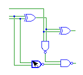
Step 1: select gate |
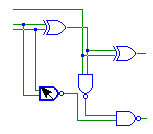
Step 2: drag gate |
Figure 2.13: Moving Single Gates
To move a single gate, press and hold the left mouse button on the
gate you wish to move. The selected gate will be shown in bold as
shown in Step 1. While holding the mouse left mouse button down drag
the gate to the new position as shown in Step 2. Any wires connected
to the gate will move along with it. For very fine adjustments,
you can also move the selected gate using the arrow keys.
Moving Groups of Gates
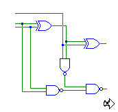
Step 1: start selection |
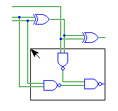
Step 2: drag selection box |
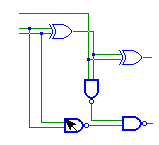
Step 3: grab selection |
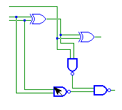
Step 4: drag selection |
Figure 2.14: Moving Groups of Gates
To move a group of gates, first select the Move/Connect tool and press
and hold the left mouse button at some point near, but not directly on
the group you wish to move. The "X" mark should appear just as if you
were going to create a new gate (Step 1). Next, while holding the
left mouse button drag the cursor to enclose a group of gates in the
selection box (Step 2). The box will appear after moving the cursor a
few millimeters. Release the mouse button to select the circuit
elements enclosed in the box (Step 3). Then, click and hold the mouse
cursor on one of the selected elements (Step 4). You can then move
the entire group to a new position.
The gates in a group selection will remain selected until you click on
a gate not in the selection, or click on an empty part of the
canvas. If you do this operation while holding the control key, you
can add gates to the selection rather than create a new selection.
2.4.4 Cut/Paste and Deleting Gates
The selected gate or gates can be deleted by pressing the delete key,
or by right clicking and selecting the "Delete" option. The selection may also be cut
or copied to the cut buffer by right clicking and selecting " Cut" or "
Cut" or " Copy".
The original names of the gates and wires in the cut buffer will be
remembered and used when pasting if possible, but when pasting
multiple copies from the cut buffer, it may be necessary for TkGate to
rename those wires and gates.
Copy".
The original names of the gates and wires in the cut buffer will be
remembered and used when pasting if possible, but when pasting
multiple copies from the cut buffer, it may be necessary for TkGate to
rename those wires and gates.
2.4.5 Rotating Gates
You can rotate single gates, or groups of gates by selecting the
single gate or group and using the and
toolbar buttons to rotate
counter-clockwise or clockwise, respectively. You can also use the
Tab or Shift-Tab keys. When rotating a selection, it can not have any
wires connecting a selected element to a non-selected element.
You can also set the default rotation by clicking on the  button on the toolbar. The inverter
symbol on the button will turn to show the current rotation. Any
gates that you create will have the default rotation shown on this
button.
button on the toolbar. The inverter
symbol on the button will turn to show the current rotation. Any
gates that you create will have the default rotation shown on this
button.
2.4.6 Wire Cutter Tool
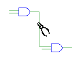
Before Cut |
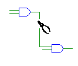
After Cut |
Figure 2.15: Cutting Wires
To cut a wire, select the tool
from the toolbar to get the wire cutters tool. Click on a wire to cut
the wire at the selected point. If there are any loose ends of a wire
that is cut, TkGate will automatically delete the loose ends. It will
also delete any joints that are no longer needed as the result of a
cut. You can also use the wire cutter tool on the edge of a module to
"cut off" a port if the module does not have a protected interface.
2.4.7 Inverter Add/Remove Tool
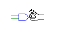
Before Add |
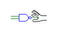
After Add |
Figure 2.16: Inverting Inputs/Outputs
You can use the tool to add or
remove inverters from a gate input or output. Select the tool and
click on an input or output port of a gate. If there is currently no
inverter on that port, one will be added. If there is already an
inverter on that port, the inverter will be removed.
2.4.8 Wire Bit-Size and Type Tool
 Figure 2.17: Wire Type Selector
Figure 2.17: Wire Type Selector
You can use the tool to
change the bit-size and type of one or more wires. Use the "Bits" and
"Type" selectors next to the button to set the desired bit size and
type. Any wires you click on with this cursor will be set to the size
and type displayed. The set of possible wire types and their interpretation
are described in the section on writing Text
Verilog Modules. In most cases you should use the "wire" wire
type. The wire size and type can also be set by double clicking on a
wire to open the Wire Properties dialog box.
2.4.9 Zoom-In/Zoom-Out
You can use the  and
and  buttons to zoom in and zoom out.
There are four zoom levels.
buttons to zoom in and zoom out.
There are four zoom levels.
2.5 Gate Properties
Gate parameters can be edited by double clicking on a gate, or by
selecting the gate and then invoking the "Properties..." command from
the "Gate" menu. The property dialog box is contains up to four
pages which can be selected through the tabs at the top. The
"General" page contains basic properties that are common to all gate
types, the "Port" page allows editing of ports on the gate, the
optional "Details" page contains additional properties that are
special to particular gate types, and the optional "Delay" page allows
editing of delay parameters of gates.
2.5.1 General Properties
The properties which can be edited on the "General" page shown to the right are:
- Gate Type: The type of the gate. This property is immutable.
- Gate Name: The name of the gate. This must be a unique
identifier for the gate within the module. Gate names must start with
a letter or the '_' character, and must contain only letters digits
and the '_' character. If you attempt to use a gate name which is
used by another circuit element in the same module, or attempt to use
illegal character, the name will by automatically adjusted by removing
the illegal characters, or by appending or prepending characters.
- Hide Name: A flag to indicate whether or not the name for
the gate should be displayed. The default is not to display names
unless this option is explicitly set.
- Anchor: A flag to indicate whether or not the gate can be
moved using the mouse. A selection containing gates with this
option active cannot be moved. This option is useful if you want to
prevent accidentally moving a gate.
- X/Y: The screen position of the gate. Values can be
manually entered even if a gate is anchored.
- Critical Path Partition: Makes the selected element a
partition point for the purpose of critical path analysis. Paths
through an element with this property will not be considered for the
purpose of critical path analysis.
2.5.2 Port Properties
The "Ports" page contains a list of all the ports on the selected
gate. To edit ports on a gate, double click on the port you wish to
modify, or select a port and hit the "Edit..." button. You can edit
the fields that are modifiable in-line in the dialog box. You can
change the signal name or the bit width, but the port name and type
may not be editable for all element types. You can also use the
"Add.." and "Delete" buttons to add new ports or delete ports for some
element types.
The fields in the port list are:
- Signal Name: The name of the signal. The signal name must
be unique within the module and has the same naming restrictions as
gate names.
- Port Name: The name of the port the signal is attached to.
The port name can only be changed for module instances.
- Type: The direction (input, output, bidirectional) of the
port. The type can only be changed for module instances.
- Bit Width: The number of bits in the signal.
2.5.3 Detail Properties
The "Details" page of the Gate Parameters dialog box is used to set
properties that are specific to a gate type. Not all gates have a
"Details" page. The example shown here is for a MUX. There are two
possible choices for the ordering of the inputs: left-to-right with
the lowest numbered input on the left, and right-to-left with the
lowest numbered input on the right. There are also two possible
choices for which side the MUX selector is placed on.
Other types of gates which take detailed parameters include modules
(which require a function name), memories (for which a memory
initialization file can be specified), switches (for which an initial
value can be specified) and clocks (for which the clock parameters can
be specified).
2.5.3 Parameter Properties
Modules defined as Verilog text can have "parameters" in addition to
ports. Parameters are constant values that are used by the module.
To change the value of a parameter, double click in the "Value" column
and enter the new value for that parameter. See the section on writing text Verilog modules for more
information on how to create modules with parameters.
2.5.4 Delay Properties
Delay for gates can be set either by specifying a standard technology
or by customizing the delay for each individual gate. To use a
standard technology, select "Standard Delay" and select a technology
from the selector button. You can choose one of the built-in
technologies "default" or "unit" that comes with TkGate, or add
additional technology definitions (see Gate Delay Files for
details). The "default" technology is roughly based on CMOS delays,
and the "unit" technology simply sets single epoch delays for
everything. Note that the delay values shown here can be affected by
the bit-width of the ports, the number of ports and the
existence/absence of inverters on the ports of gates. In some cases,
adding an inverter to a port on a gate can decrease the delay value
(e.g., adding an inverter to change an AND into a NAND).
To set the delay values for an individual gate, select "Custom Delay"
and enter values for each of the delay parameters in epochs. Delays
values must be integers greater than or equal to one, and less than
4096.
2.6 Wire Properties
Wire properties can be edited by either double clicking on a wire, by double
clicking on a net name from the "Nets" list, or by selecting a net
from the "Nets" list and then invoking the "Properties..." command
from the "Gate" menu.
The net properties are:
- Net Name: The signal name of the net. Signal names must be
unique within the module in which they are defined. Signal names must
start with a letter or the '_' character, and must contain only
letters digits and the '_' character. If you attempt to reuse a name
within a module, or to use an illegal character, the name will be
automatically adjusted by removing the illegal characters, or by
appending or prepending characters. Signal names that begin with a
'_', will be displayed with an over-bar to indicate an active low
signal. In this case, the leading '_' itself will not be displayed.
- Hide Name: A flag to indicate whether or not the name for
the signal should be displayed. The default is not to display names
unless this option is explicitly set.
- Bit Width: The number of bits in the signal.
- Net Type: The type of the net.
- Port Type: The direction (input, output, bidirectional) if this
signal is a module port. If the signal is not a module port, this field
will not be displayed.
2.7 Wire Name and Bit-Size Labels
One way to display the label of a wire is to uncheck the "Hide" option
in the Wire Properties dialog box. Another
easier way is to right click on the wire and select "Show Label".
This will show the label of the net at the point at which you clicked.
A wire may be labeled on one or all segments. You can also click on a
wire label and drag it to a new position on the net. When you let go
of the label, it will be attached to the closest point on the closest
segment. It will also be attached on the same side on which you drop
it. You can remove a label from a segment by dragging it far from the
wire and dropping it, or by explicitly right clicking and selecting
"Hide Label". The "Hide Label" function will hide only the label on
the selected segment.
Right clicking and selecting "Hide All Labels" will make all of the
labels on a net invisible, but TkGate will remember where they were
placed. The next time you select "Show Label", or uncheck "Hide" in
the Wire Properties dialog box, all of the
hidden labels will become visible again. If you instead select "Clear
All Labels", the labels will be hidden, and the original locations
forgotten.
You can turn display of the bit width of a multi-bit wire on and off
by right clicking and selecting "Show Bit Width" or "Hide Bit Width".
The display can be controlled for each segment, but the size is always
displayed in the middle of the segment and can not be moved.
2.8 Searching for Gates and Wires
You can search for wires and gates anywhere in your circuit by using
the "Find..." option from the "Edit" menu, or by pressing  on the toolbar. Enter text into the entry
area to search for gates, nets or text in circuit comments. The
search results will be updated as you type showing the list of objects
that match your search criteria. You can choose to locate objects
with names that contain, begin with, end with or exactly match the
name you type. You can also choose to ignore case in the match, or
limit the search to only gates, nets, comment text, or any combination
thereof.
on the toolbar. Enter text into the entry
area to search for gates, nets or text in circuit comments. The
search results will be updated as you type showing the list of objects
that match your search criteria. You can choose to locate objects
with names that contain, begin with, end with or exactly match the
name you type. You can also choose to ignore case in the match, or
limit the search to only gates, nets, comment text, or any combination
thereof.
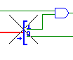
Figure 2.25: Cross-hairs
on Target Device
When you wish to go to an item in the search list, double click on it.
TkGate will open the module containing that item, and place cross-hairs
on it to show you which item you selected. The search dialog box will
remain open until you press "Close" so that you can visit multiple
objects until you find the one you are looking for. Press the "Find"
button to go to the next object in the list without double clicking.
2.9 HTML in Comments
TkGate supports a small number of HTML markup elements in comments.
The markup commands can be used to change font face, font size, or add
hyperlinks to other documents or locations in a circuit. Comments are
created by clicking the mouse to set a mark, then selecting "Comment"
from the "Gate" menu (or using the "C" shortcut).
When you first create a comment, the properties box for the comment
will appear and allow you to enter the text of the comment. You can
also double click on an existing comment to edit its text. Hold down
the Shift key while clicking to avoid following any hyperlinks in the
comment.
When you are done typing the comment, click on the "OK" button to
close the comment properties box and update the text of the comment as
it is displayed on the screen. Currently, unlike a true HTML
document, newlines in comments are not wrapped and are displayed as
typed.
The supported markup commands are:
| Element | Description |
|
| <value-of name="name"> |
Replace with value of special TkGate constant. |
| <a href="url"></a> |
Insert a hyperlink or link to a Verilog file. |
| <b></b> |
Make the enclosed text appear in a bold font. |
| <i></i> |
Make the enclosed text appear in an italic font. |
| <h1></h1> |
Make the enclosed text appear in Heading 1 font. |
| <h2></h2> |
Make the enclosed text appear in Heading 2 font. |
| <h3></h3> |
Make the enclosed text appear in Heading 3 font. |
| <tt></tt> |
Make the enclosed text appear in fixed-width typewriter (Courier) font. |
| <small></small> |
Make the enclosed text appear in a font one step smaller than the current font. |
| <big></big> |
Make the enclosed text appear in a font one step bigger than the current font. |
| <font></font> |
Set the font characteristics of the enclosed text. |
| &??; |
Replaced with a character entity.
|
|
2.9.1 Accessing Internal Constants (<value-of>)
This is a special TkGate-specific markup command. It
is replaced with the value of the specified variable. The primary
purpose of this command is for use on the TkGate start-up page. The
possible variable names are "tkgate-version" for the current version
of TkGate, "tkgate-homepage" for the current home page of TkGate,
"tkgate-mailcontact" for the e-mail address of the TkGate contact
person, "tkgate-copyright" for the copyright notice, and
"tkgate-release-date" for the release date of this version of TkGate.
2.9.2 Hyperlinks (<a>)
This command inserts a hyperlink into a comment. Different actions
are performed depending on the protocol of the link. For "http:" and
"mail:" protocol links, TkGate will open the browser or e-mail client
that has been registered in the users TkGate options. Use the HTML Tab in the Options dialog
box to set your browser and email client.
If the protocol is "file:", then action depends on the extension on
the file. If the extension is ".v", then TkGate will load the
specified file as if it had been opened through the "File Open..."
menu. If the extension is ".html", then TkGate will load the file in
a browser, just as with "http:" protocol links. For all other
extensions, TkGate will load the file in a text viewer.
Files specified with the "file:" protocol can use one of the following
special codes to reference specific TkGate directories:
| Code | Directory |
|---|
|
| @T | TkGate tutorial directory. |
| @E | TkGate examples directory. |
| @H | TkGate home directory. |
| @C | Directory of currently open circuit. |
If a link contains the '#' character, the text after it is treated as
a label. A label can reference a gate, wire or module. When the
first character is '/', the rest of the label is assumed to reference
a module. TkGate will open that module when the link is followed.
When the first character is not '/', then the label is assumed to
reference a gate or wire instance. A full path specifier must be
used. That is a wire "w4" in a module with instance name "m1" (not
function name) would be specified with the link "#m1.w4". When
instance links are opened, TkGate will go to the containing module and
place "cross-hairs" on the item referenced by the label. In the
special case where the entire link starts with a '#', these actions
are performed in the current circuit.
One additional, TkGate-specific protocol is "action:". Links with the
"action:" protocol can be used to invoke TkGate commands. For example
"action:newFile" will cause TkGate to open a new file just as if the
user had selected "File New..." from the menu. The following actions
are supported with the "action:" protocol:
| Action | Description |
|
| newFile | Create a new file. |
| loadFile | Load an existing file. |
| loadLibrary | Open the library manager. |
| saveFile | Save the current file. |
| saveAsFile | Save the current file to a new name. |
| editOptions | Open the options dialog box. |
| startSimulator | Start the simulator./td> |
| blockNew | Create a new module. |
| blockDelete | Delete a module. |
| blockCopy | Copy a module. |
| blockSetRoot | Set the root module. |
| blockRename | Rename a module.n |
| blockClaim | Claim a module. |
| zoomIn | Zoom in. |
| zoomOut | Zoom out. |
|
2.9.3 Fonts
Example:
The comment text:
<font color=toupe family=times size=4>This is a test</font>
Will be rendered as:
This is a test
There are several command for changing the font size, face and color.
The most general of these is the <font> command. TkGate supports
the "size", "color" and "face" attributes of this command. The "size"
is an integer between 1 and 7 where 1 results in the smallest
supported font, and 7 the largest. The "color" attributes specifies
the color that should be used for the text. Any color from the X11
color name database may be used. The "face" specifies the font family
to use. The supported font families are "courier", "helvetica",
"times" and "symbol".
2.9.4 Character entities
Character entities are sequences of characters that are replaced with
special symbols. Most of the common character entities available in
HTML are supported. For example "<" is replaced with "<",
and "≥" is replaced with "≥". Greek characters can also be
generated. For example, "α" is replaced with "α".
2.10 Printing a Schematic
To print a circuit, choose the "Print..." option from the "File" menu,
or press the button on the
toolbar. You can choose to print directly to a printer using a
specified print command, or you can print to a file. When printing a
single-page document to a file, you can also choose to save the
circuit in encapsulated postscript. This will suppress printing of
the page frame and title.
The print dialog box is divided into two pages. The first page
selects the "Output" of the command and has the following options:
- Output to printer/Output to file: Select one of these to
indicate if the schematic should be written to a file, or sent
directly to the printer.
- Printer: If printing to a file, this will indicate the
printer to use. The list of printers is determined from /etc/printcap
file. You can click on the "Advanced..." button to edit the printer
command used to output to that printer.
- File Name: If output to a file is selected, this field
indicates the name of the output file The default name is the name of
the current circuit name with the extension renamed to ".ps". You can
use the "Browse..." button to bring up a file name browser.
- Save as Encapsulated Postscript: If this option is enabled,
the circuit will be saved as an Encapsulated Postscript file suitable
for inclusion into a document. Printing of the title bar and the
frame will be suppressed. Only single-page documents can be save
In Encapsulated Postscript format.
- Paper Size: Indicates the paper size of the document. If
your printer is multi-tray, the appropriate tray will be selected. A
variety of U.S. and European/Asian paper sizes are provided.
- Orientation: Indicates the orientation of the diagram on
the page. If you select "Portrait", the image will be printed so
that the long side of the paper is vertical. If you select
"Landscape", the image will be printed so that the short side is
vertical.
- Print Double-Sided: Indicates that images should be printed
on both sides of the page. This option is only effective on printers
capable of double-sided printing.
The second page of the print dialog box selects the "Content" to be
printed and has the following options:
- Module Selection: Indicates which modules should be printed.
The options are:
- All: All modules in the current document will be printed.
- Current: Only the module in displayed in the main editing window will be printed.
- Used: Only the top-level module and any of its sub-modules will be printed.
- Selected: Only modules selected in the list box below will be printed.
- Include library modules: Normally modules marked as being
loaded from a library will not be printed. Enable this option to print these modules.
- Scale large modules to fit page: Modules which cannot fit
on a single page without scaling will be reduced in size so they
fit.
- Partition large modules into multiple pages:Modules which
cannot fit on a single page without scaling will be split into
multiple pages. A key indicating which portion a page represents will
be printed in the lower right corner of the page.
- Include index: Prints an index page listing each of the modules
in alphabetical order and the pages they are on.
- Include hierarchy graph: Prints a hierarchy graph rooted at
the top-level module showing the relationship between parent and child
modules.
- Print small modules four per page: Causes modules which can
fit into a single quadrant to be grouped and printed on the same page.
2.11 Circuit Properties
Circuits have several global properties which can be set by selecting
"Circuit Properties..." from the "Module" menu. This will cause the
dialog box shown at the right to appear.
The circuit properties are organized into two pages. A "General" page
listing several miscellaneous properties, and a "Simulation" page
listing properties that affect simulation of the circuit. The
properties on the "General" page are:
- File Name: This non-user-modifiable field shows the name of the
file from which the circuit was last read or saved to.
- File Version: This non-user-modifiable field shows the
version of TkGate that saved the file from which this circuit was loaded.
- Circuit Title: This is a text description of the circuit.
It will be used when printing a schematic. It is also used for
user-defined libraries as the library description in the library manager.
- Do not warn about discarding changes: Enabling this option
disables warnings when discarding a modified circuit by exiting
TkGate, by loading a new circuit, or by creating a new circuit.
Normally, this option is only used by the example and tutorial
circuits that come with TkGate. Enabling this option is not
recommended for user circuits.
- Use extender bars: This determines whether "extender bars"
should be used on newly created gates. In older versions of TkGate,
the inputs on simple gates such AND and OR were squeezed into a fixed
space irregardless of how many inputs their were. Newer versions of
TkGate can use extender bars on many-input AND, OR and XOR gates. You
can use this option to control the style to be used on newly created
gates. Existing gates are unaffected and a circuit can contain a mix
of old-style and new-style gates.
- Enable auto-start of simulation: If this flag is enabled,
the simulator will be automatically started when you load this
circuit.
The "Simulation" page of the circuit properties includes the following
options:
- Initialization Scripts: Indicates a list of TkGate
simulation scrips which will be automatically executed when the
simulator is started. If a file name does not start with a '/', the
current directory, the directory containing the circuit file and the
user's home directory will be searched for the file.
- Clock Options: Indicates the behavior of the clock step
command
 or Tab key when in
simulation mode. If "Clock step stops on all clock posedges"
is selected, then the button will
cause the simulation to advance until the rising edge of any clock in
the circuit. If "Clock step stops on clock: is selected, then
the button will cause the
simulation to advance until a rising edge on the specified clock. All
other clocks will be ignored.
or Tab key when in
simulation mode. If "Clock step stops on all clock posedges"
is selected, then the button will
cause the simulation to advance until the rising edge of any clock in
the circuit. If "Clock step stops on clock: is selected, then
the button will cause the
simulation to advance until a rising edge on the specified clock. All
other clocks will be ignored.
- Default Simulation Time Scale This option allows you to set
the default time scale for the circuit. The units are the units to
use for delay, and the precision sets the time for one simulation epoch.
Last edit by hansen on Fri Jul 27 09:37:56 2007